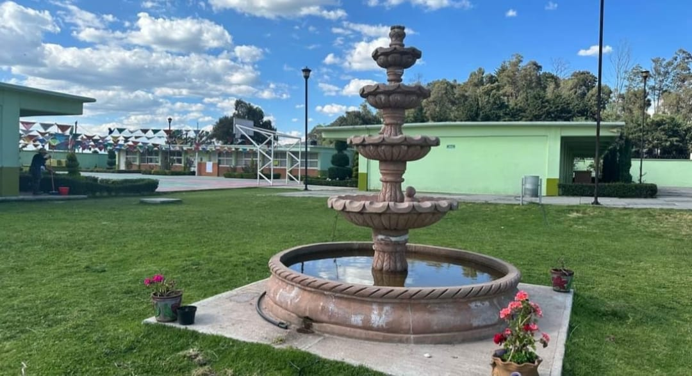
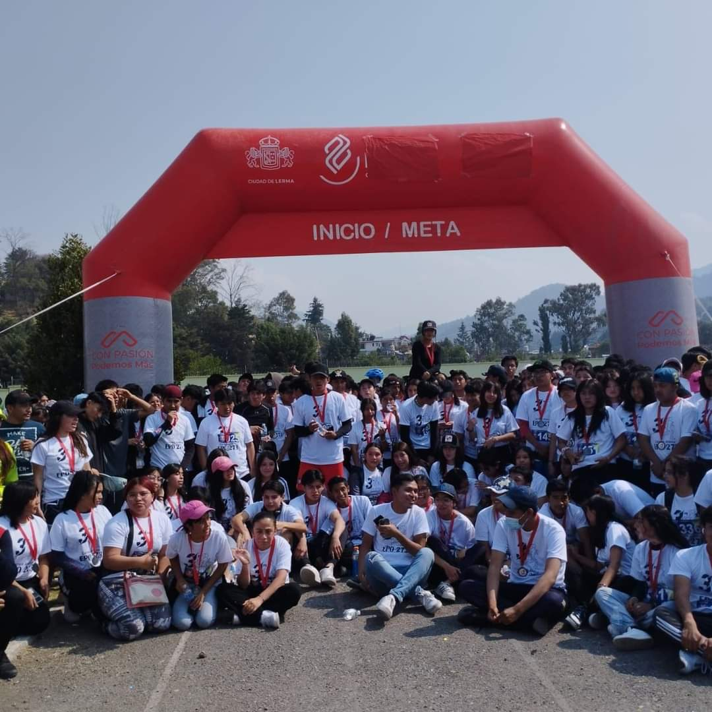
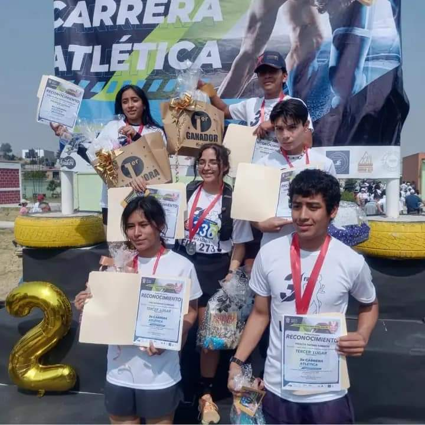

¿Y AHORA QUE HAGO?




Carrera Atletica 2024
Se llevó a cabo la edición número 3 de la CARRERA ATLÉTICA INSTITUCIONAL con el tema “Corriendo en Familia”.
Se contó con la participación de la comunidad estudiantil y el apoyo y logística del equipo docente y directivo de la institución.
Se tuvo la participación de más de 400 alumnos, 50 padres de familia en un recorrido de 5 km, en busca de la promoción de una vida saludable y cumplimiento de lo planeado en el Proyecto Transversal Institucional.
Proyecto Transversal
El proyecto transversal consistio en la elaboracion de un plan de vida, en el que los alumnos pueden trazar el rumbo de su futuro y alcanzar sus metas mas importantes, lo que les permite visualizar donde quieren estar en las diferentes areas de su vida como: profesional, personal, familiar y social. Los alumnos realizaron distintos trabajos basados en la eleccion de la carrera que desean estudiar, los cuales aocmodadaron en una carpeta.
Carrera Atletica 2024
Se llevó a cabo la edición número 3 de la CARRERA ATLÉTICA INSTITUCIONAL con el tema “Corriendo en Familia”. Se contó con la participación de la comunidad estudiantil y el apoyo y logística del equipo docente y directivo de la institución. Se tuvo la participación de más de 400 alumnos, 50 padres de familia en un recorrido de 5 km, en busca de la promoción de una vida saludable y cumplimiento de lo planeado en el Proyecto Transversal Institucional.
Proyecto Transversal
El proyecto transversal consistio en la elaboracion de un plan de vida, en el que los alumnos pueden trazar el rumbo de su futuro y alcanzar sus metas mas importantes, lo que les permite visualizar donde quieren estar en las diferentes areas de su vida como: profesional, personal, familiar y social. Los alumnos realizaron distintos trabajos basados en la eleccion de la carrera que desean estudiar, los cuales aocmodadaron en una carpeta.